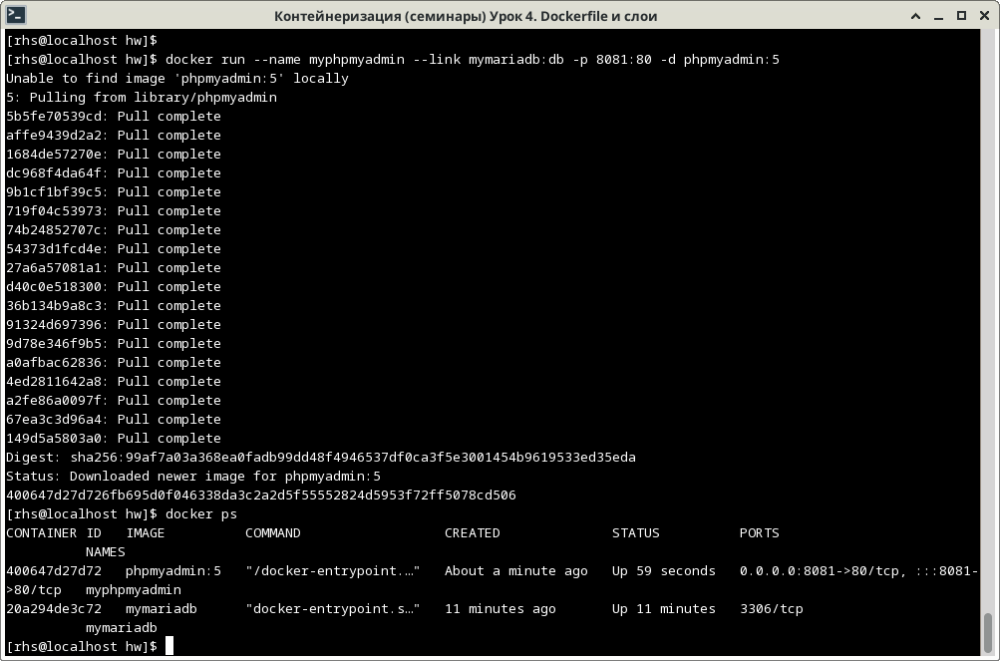

Сбилдить свой имейдж на основе имейджа mariaDB используя Dockerfile. Добавить
какой-нибудь файл в имейдж.
Dockerfile следующего содержания:
---
FROM mariadb:10.10.2
RUN echo "This file has been created during docker container building!" > /myfile.txt
---
То есть образ будет создаваться на основе образа mariadb с тэгом 10.10.2
и в корне этого образа создастся файл myfile.txt с текстовой строкой внутри
"This file has been created during docker container building!"
mymariadb при помощи команды:
docker build -t mymariadb .
docker run -e MARIADB_ROOT_PASSWORD=test123 -d mymariadb
[rhs@localhost hw]$ docker run -e MARIADB_ROOT_PASSWORD=test123 -d mymariadb 65cad9045eb48cf0be0d1232011f385e304bc21116ec02bf1236c820bfb89aba [rhs@localhost hw]$
`docker ps'
bash в этом запущенном контейнере при помощи команды, указывая запомненный ранее hash
number для идентификации контейнера:
docker exec -it 65ca bash
ls убеждаемся что файл myfile.txt создан и при помощи команды
cat выводим на экран его содержимое
docker stop 65ca
docker rm 65ca
Сделать свой конфиг для mariaDB и заменить конфиг базового имейджа используя
Dockerfile. Допустим поменять порт, максимальное использование памяти и т.д
Конфиг для mariadb в базовом образе находится в файле
/etc/mysql/mariadb.conf.d/50-server.cnf. При помощи строчного редактора sed
поменяем в этом конфиге значение переменной expire_logs_days, отвечающую за хранение
логов определённое число дней, установим её в 7 чтобы логи хранились ровно неделю. Оригинальный
файл сохраним с расширением .orig
Для этого создадим следующий Dockerfile, содержащий вызов строчного редактора sed:
--- FROM mariadb:10.10.2 RUN sed -E -i.orig 's/(expire_logs_days\s*=\s*)[0-9]+/\17/' /etc/mysql/mariadb.conf.d/50-server.cnf ---
mymariadb при
помощи команды:
docker build -t mymariadb .
--name) в командной строке:
docker run --name mymariadb -e MARIADB_ROOT_PASSWORD=test123 -d mymariadb
`docker ps'
bash в этом запущенном контейнере:
docker exec -it mymariadb bash
grep смотрим значение переменной expire_logs_days в оригинальном
конфигурационном файле, который был сохранён с расширением .orig и в текущем конфигурационном файле.
Убеждаемся что они разные, было 10, а стало 7 как мы и указали в Dockerfile.
docker stop mymariadb
docker rm mymariadb
Слинковать папку с базой данных с контейнера с mariaDB в папку на хосте (как на семинаре). Заполнить БД данными или добавить запись и проверить, что файлы базы данных появились на хостовой машине.
Тут в принципе всё то же самое как было на предыдущем семинаре, поэтому не буду ничего пошагово расписывать, просто сразу же продемонстрирую скриншот.
Используется тот контейнер, который мы только что создали в задании №2 с изменённой переменной
expire_logs_days в оригинальном конфигурационном файле
Запустить phpmyadmin (в контейнере) и через веб проверить, что все введенные данные доступны.
И тут тоже всё то же самое как было на предыдущем семинаре, поэтому тут тоже не буду ничего пошагово расписывать, просто сразу же продемонстрирую скриншоты.
Как видим myphpadmin запускается:
И созданную базу с именем MYDATABASE прекрасно видит: